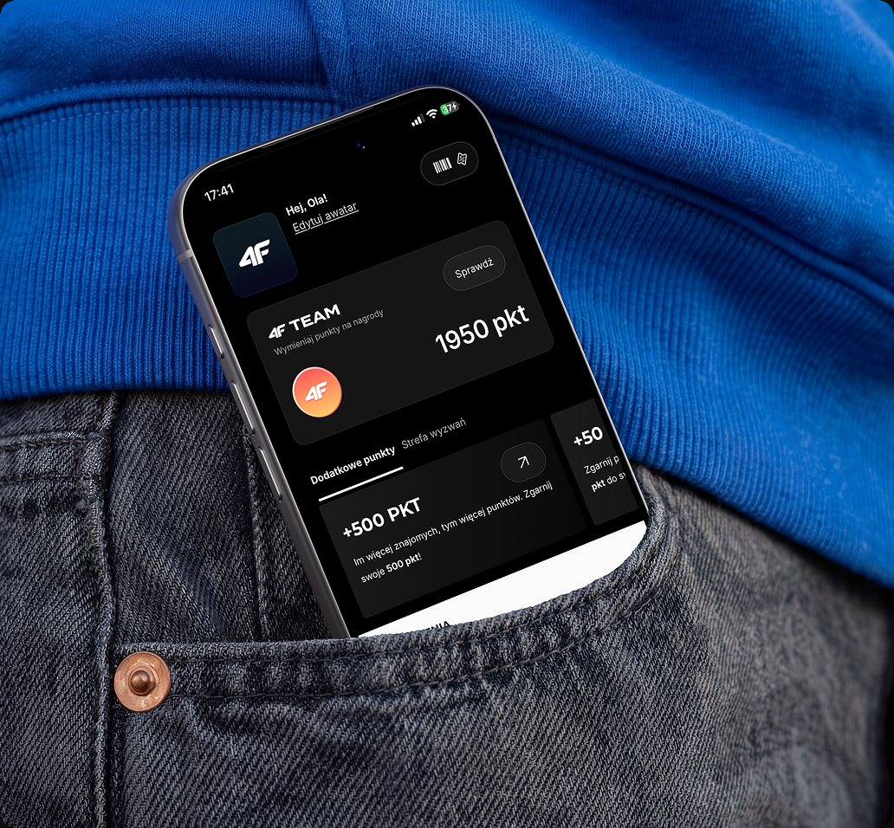

Aplikacja mobilna 4F. Ewolucja z kanału sprzedaży w ekosystem lojalnościowy
- Moja rola
- Senior Product Designer
- Czas
- 2025-26
- Obszar
- Konwersja | Omnichannel | Lojalność

Aplikacja mobilna generowała sprzedaż, ale nie budowała długofalowej relacji z klientem
- 87% Porzuceń koszyka w aplikacji
- 15% Klientów skanowało kartę lojalnościową w salonach
- 5% Stała zniżka dla zalogowanych (pasywny program lojalnościowy)
Kontekst zmian
Dane wskazują jasny cel: większość transakcji nadal odbywała się w salonach stacjonarnych, lecz klienci nie używali tam aplikacji mobilnej.
-
01
Wyzwanie
Skomplikowany checkout
4 kroki, brak natywnego BLIK’a i portfeli cyfrowych
-
02
Wyzwanie
Brak motywacji
Klienci nie widzieli powodu do regularnego powrotu
-
03
Wyzwanie
SEO nad mobile
Treści produktowe zoptymalizowane pod wyszukiwarki WWW zamiast aplikacji.
Strategia
3 kluczowe decyzje, które zamieniły aplikację w ekosystem lojalnościowy
-
Program lojalnościowy 4F Team
Wielopoziomowy program z realnymi korzyściami
-
Redukcja tarcia w koszyku
Redukcja kroków (z 4 do 2), BLIK i popularne portfele na pierwszym planie
-
Konto jako centrum zaangażowania
Treści, wydarzenia, grywalizacja i integracja z salonami (rozwój omnichannelu)
Decyzja I
Wdrożenie programu lojalnościowego 4F Team
Wielopoziomowy program (Bronze, Silver, Gold, Elite) z mechanizmem zbierania punktów, zwrotem środków na kolejne zakupy i integracją z salonami.

-
Omnichannel w praktyce
Oferta stacjonarna dopasowana do geolokalizacji, darmowy odbiór w salonie, rejestracja paragonów
-
Realne korzyści
Punkty za zakupy, poziomy, zwroty na kolejne zakupy
-
Wzrost zaangażowania
Konto użytkownika jako centrum relacji z marką